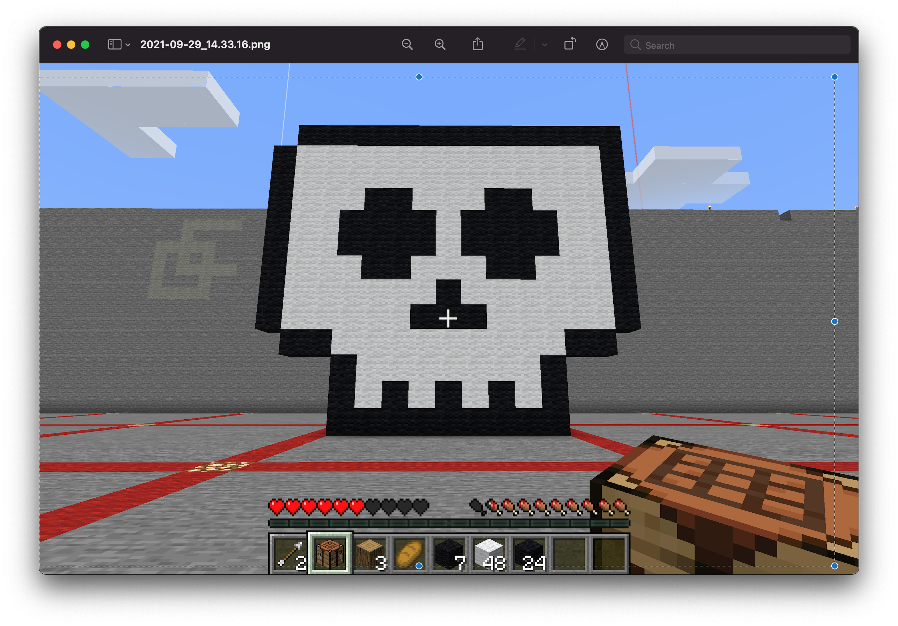

On this page I have both my minecraft art that I created and the 3D print that came out of it. I chose to do a skull because of Dia de los Muertos, and in our culture we beleive that on that day we must honor our deceased loved ones and put out an "ofrenda" with things that they used or liked to represent them. We do this to not forget our family heritage and honor them.
